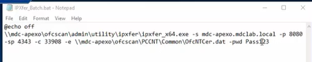

1) Ele colocou o .bat dentro da pasta Ofcscan, que fica dentro do diretorio do Apex One


2) Run as adm o .bat

3) Então os programas vão parando de funcionar, demorando um tempo, dependendo do potencial da sua maquina
4) Então deu certo

5) E ve se o agent está no Apex One e não no Office Scan